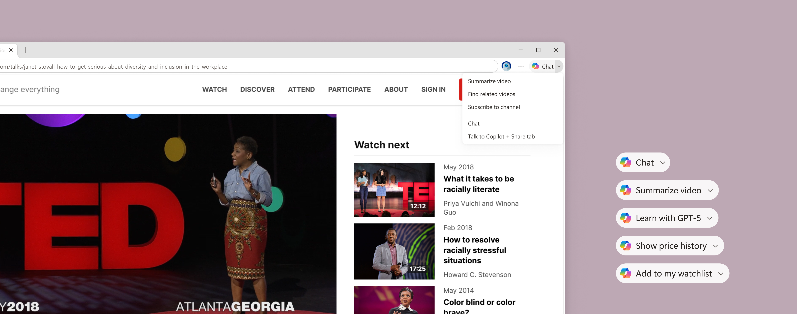

As AI took off across the industry, Microsoft Edge formed a small, specialized team to figure out what an AI-native browser could actually look like. I joined as one of the designers on this team, focused on bringing Copilot deeper into the browsing experience — moving it beyond just a chat in the side pane and into the surfaces users already use every day. My work spanned entry points, discovery flows, and contextual AI interactions, all grounded in a single question: how do you make AI feel like a natural part of the browser, not a feature bolted onto it?
Contextual Copilot
A custom Copilot component that works in any contextual scenario across Edge
Designed to bring Copilot to users in context — without opening the side panel. The component needed to work across any Edge surface, consumer and commercial, which meant designing something neutral and minimal enough to fit anywhere without feeling out of place. Starting with the context menu as the first test case, the pattern is now being adopted across 3 teams and multiple feature areas in Edge.
Project deep dive
Copilot nudges
A predictable home for contextual AI actions in the browser
The current nudges framework came from the address bar with no consistent placement or logic. I redesigned the Copilot chat button in the browser frame as a split button: one side opens chat, the other surfaces contextual, page-level AI actions. This gives users a single, predictable entry point for quick Copilot actions without opening the full side panel, while reducing reliance on one-off nudges. Works across both consumer and commercial Edge.
Key metrics:
- Copilot WAU increase: 3.45%
- Copilot retentive WAU increase: 2.56%
- Vision usage increase: 8.59% (from users clicking on the dropdown)

Copilot Mode
Bringing AI-powered browsing to millions of Edge users
Copilot Mode was a dedicated AI browsing experience built into Microsoft Edge — letting users summarize pages, ask questions, and get contextual help without ever leaving the browser. I was part of the design team that launched it in October 2025. Since then, the product has evolved to an early access experience users can opt into.